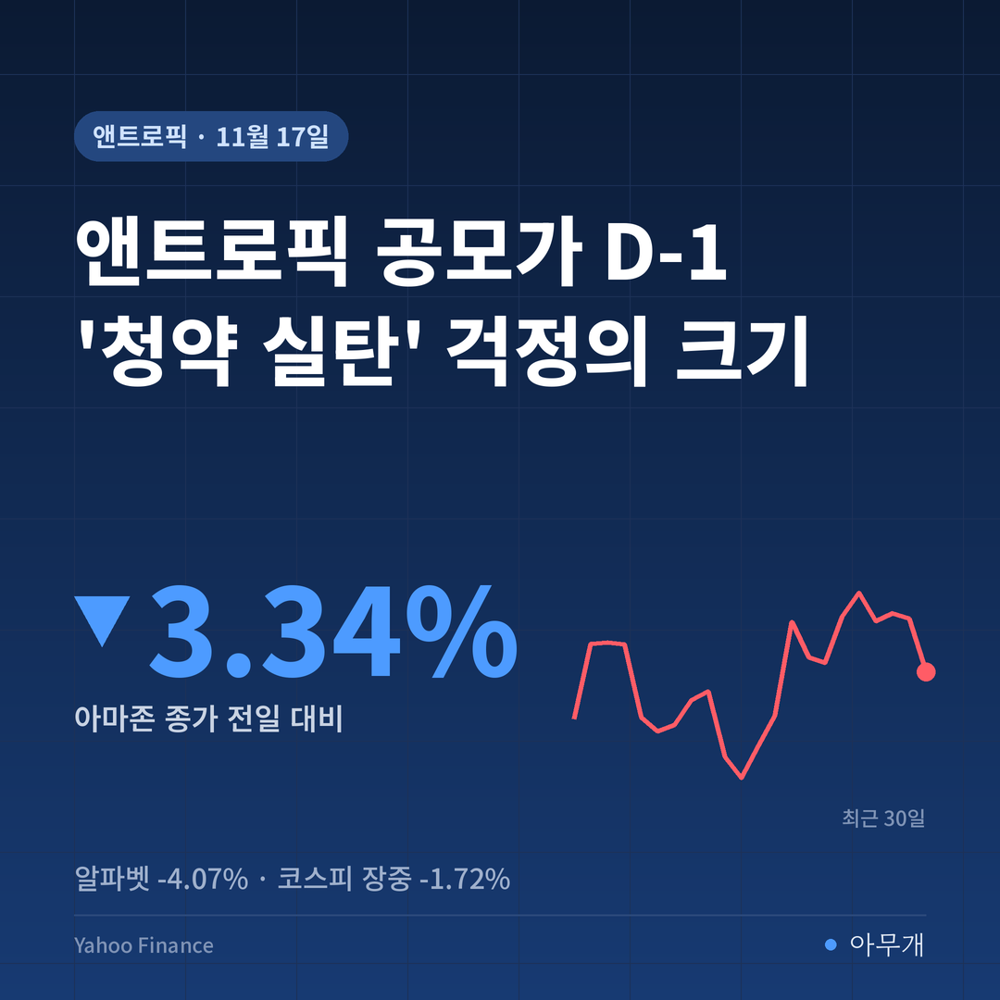
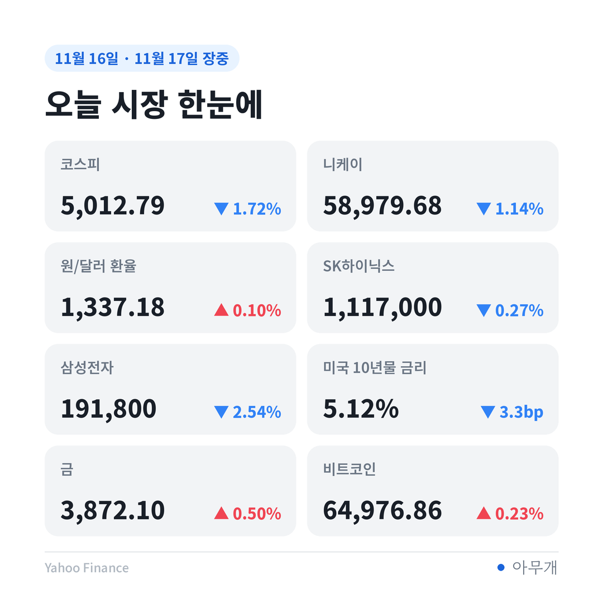
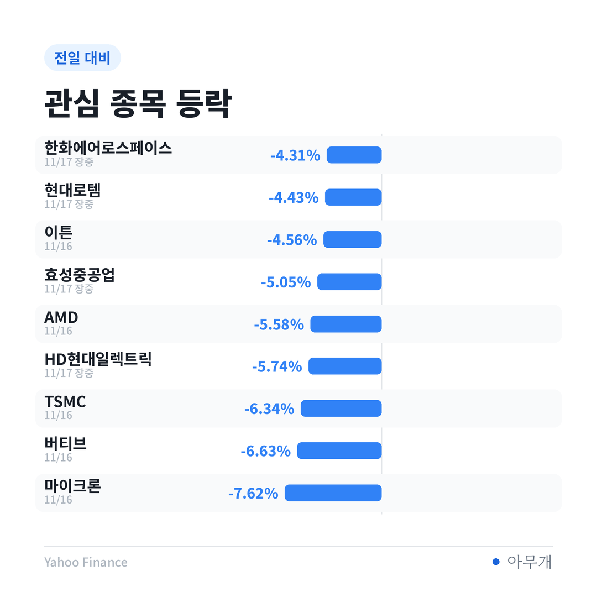
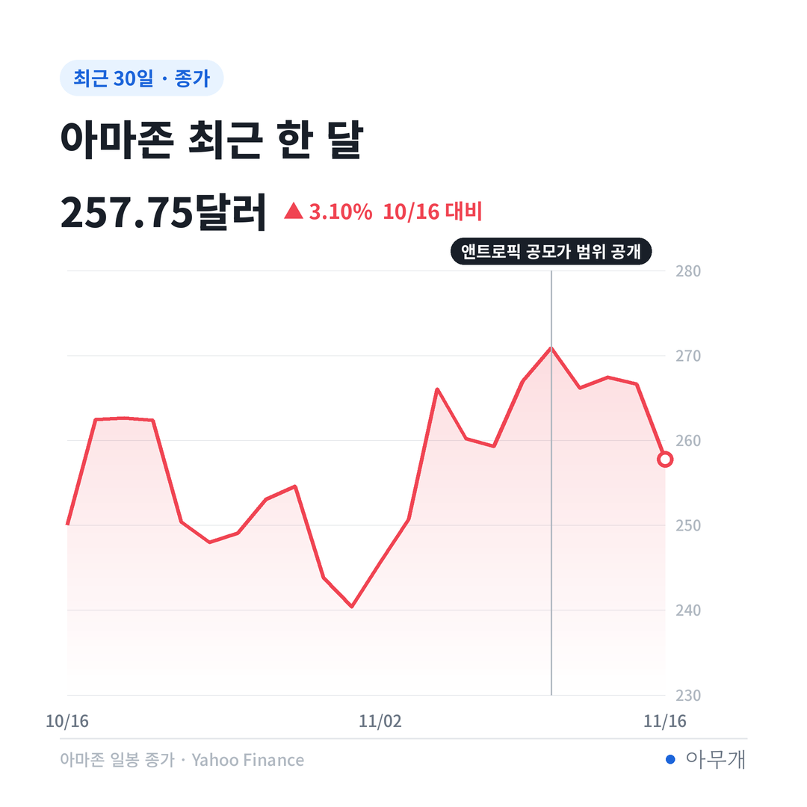

📷 사진 1 자리
신고서 한 장에 적힌 것
앤트로픽이 미국 증권거래위원회(SEC)에 낸 수정 증권신고서에는 희망 공모가 70~78달러, 신주 8억135만주가 적혀 있어요[1][2]. 상장 뒤 전체 주식은 130억8,667만주가 돼요[1].
| 날짜(현지) | 내용 |
|---|---|
| 11월 10일 | 수정 증권신고서 제출, 희망 공모가 70~78달러[1][2] |
| 11월 13일 | 기관 주문이 공모 물량의 약 6배라는 보도[5][6] |
| 11월 16일 | 직원 주식 매도 규칙 강화 보도[7] |
| 11월 18일 | 공모가 확정[1][4] |
| 11월 19일 | 나스닥 거래 시작, 종목코드 ANT[1][3] |
곱셈은 간단해요. 8억135만주 × 78달러 = 약 625억 달러, 밴드 하단 70달러면 약 561억 달러예요[1]. CNBC는 최대 640억 달러를 조달할 수 있다고 봤어요[4]. 미래에셋증권은 10월 말만 해도 공모로만 1,000억 달러까지 가능하다고 봤는데, 최근 시장을 반영해 30~40% 줄었다고 짚었어요[1].
기업가치도 내려왔어요. 밴드 상단 기준 시가총액은 1조200억 달러, 스톡옵션까지 넣은 완전 희석 기준은 1조4천억 달러로 추정돼요[3][4]. 10월 초 월가 일각에서 거론되던 2조 달러와 비교하면 크게 낮은 값이에요[3]. 5월 투자 유치 때 9,650억 달러보다는 여전히 높아요[1].
올해 6월 스페이스X가 세운 사상 최대 IPO(기업공개) 기록이 750억 달러예요[1]. 밴드대로라면 앤트로픽은 역대 2위에 머물 가능성이 커요[1].
확인된 것과 보도·전망
| 내용 | 누가 | 성격 |
|---|---|---|
| 밴드 70~78달러, 신주 8억135만주 | 수정 증권신고서[1][2] | ✅ 공시 |
| 공모 물량의 약 6배 주문 | 블룸버그 보도[5][6] | ⚠️ 보도 |
| 직원은 상장일 보유 지분 10%까지 매도 가능 | 비즈니스인사이더 보도[7] | ⚠️ 보도 |
| 완전 희석 기업가치 1조4천억 달러 | KB증권·NYT 추정[1][11] | 🗣️ 추정 |
| 대규모 IPO 뒤 증시는 부진했다 | 유진투자증권[8] | 🗣️ 증권사 분석 |
청약 실탄 걱정, 오늘 국장 숫자로 보면
초대형 공모를 앞두면 청약할 현금을 마련하려고 한두 달 전부터 주도주를 판다는 설명이 증권가에서 나와요[1]. 오늘 연합뉴스는 코스피 약세를 젠슨 황·앤트로픽·금리의 '삼중고'로 묶었어요[9].
📷 사진 2 자리
숫자로 보면 그 설명과 맞는 흐름이 있어요. 코스피는 장중 기준 1달 -11.56%, 나스닥은 1달 -6.24%, 필라델피아 반도체지수는 1달 -13.71%예요. AI 대표주가 먼저 빠졌다는 점이 '실탄 마련' 설명과 겹쳐요.
크기도 재 볼 만해요. 신주 상단 규모 약 625억 달러를 오늘 장중 환율 1,337.18원으로 바꾸면 약 83조6천억원이에요[1]. 삼성전자·SK하이닉스 두 회사가 쌓아 둔 현금 329조원의 약 4분의 1에 해당하는 돈이 한 종목 공모로 들어가는 셈이에요[10].
다만 걱정이 공모 하나 때문만은 아니에요. 미국 10년물 금리는 5.121%로 1주 사이 25.7bp(0.01%포인트) 올랐고 공포지수 VIX는 22.91이에요. 금리가 높을 때는 새 주식에 들어갈 돈도, 기존 주식을 붙잡아 둘 돈도 모두 빡빡해져요.
국내에서 AI 전력·반도체 관련주는 오늘도 약했어요. 오후 1시 47분 기준 HD현대일렉트릭 -5.74%, 효성중공업 -5.05%, 밤사이 미국에서는 마이크론 -7.62%, 버티브 -6.63%, TSMC -6.34%였어요.
📷 사진 3 자리
아마존·알파벳 장부의 숫자
앤트로픽 최대 외부 주주인 아마존은 180억 달러를 투자했어요. 밴드 상단 기준이면 그 지분 가치가 2,500억 달러 이상, 투자액의 약 13배가 된다고 NYT가 보도했어요[11]. 구글(알파벳)이 투자한 330억 달러도 1,400억 달러로 4배 넘게 불어난다는 계산이에요[11]. 두 회사를 합치면 앤트로픽 지분의 4분의 1 이상이에요[11].
📷 사진 4 자리
그런데 16일(현지) 주가는 반대로 움직였어요. 아마존은 257.75달러(-3.34%), 알파벳은 283.72달러(-4.07%)였어요. 1달로 보면 아마존 +3.10%, 알파벳 -16.70%로 엇갈려요. 지분 평가이익보다 AI 투자 전체에 대한 불안이 더 크게 반영된 하루였어요.
국내 투자자 지갑에서 보면
국내 투자자가 앤트로픽 주식을 사려면 한국 시각 19일 밤 이후 미국 거래가 시작된 뒤 해외주식 계좌로 사야 해요[14]. 공모가가 78달러로 정해지면 1주가 오늘 장중 환율로 약 10만4천원, 70달러면 약 9만4천원이에요[1]. 첫 거래가는 공모가와 다를 수 있고 환율이 움직이면 원화 기준 가격도 바뀌어요.
상장 직후 풀릴 수 있는 물량도 확인해 둘 숫자예요. 보도에 따르면 직원은 상장 당일 보유 지분의 10%, 내년 초 첫 분기 실적 발표 뒤 35%를 더 팔 수 있어요[7]. 공동 창립자 7명도 이번 공모에서 각각 약 340만주, 1인당 약 2억5천만 달러어치를 팔아요[2]. 지수 편입은 늦지만 이를 따라 사야 하는 자금 수요가 26조원이라는 분석도 나왔어요[12].
공모가가 정해진 뒤의 세 갈래
| 시나리오 | 무엇을 보면 되나 | 예상되는 영향 |
|---|---|---|
| 밴드 위에서 확정 | 공모가가 78달러를 넘는지, FT가 전한 상향 전망이 맞는지[1] | AI 투자 심리 회복 신호로 읽혀 반도체·전력기기에 숨통이 트일 수 있음 |
| 밴드 안에서 확정 | 첫 거래 종가가 공모가 위에서 버티는지 | 공모 자금이 빠진 뒤 수급 부담이 줄어든다는 증권가 전망을 확인하는 단계[1] |
| 밴드 아래 또는 첫날 약세 | 공모가 70달러 아래, 첫날 종가 하락 | '대형 IPO는 사이클 후반 신호'라는 해석에 힘이 실릴 수 있음[8] |
이번 상장은 앤트로픽이 몸값을 낮춰 들고 나왔다는 점이 핵심으로 보여요. 기대보다 30~40% 작은 공모, 2조 달러가 아닌 1조 달러대 기업가치는 '고점의 과열'보다 '조정장에서 받아들일 만한 가격'에 가까워요[1][3]. 그래서 내일 공모가 숫자 하나가 엔비디아 실적만큼 AI 주식 전체의 온도를 보여 줄 것 같아요.
✍️ 직접 보거나 들은 경험이 있으면 위 문단에 한두 줄 덧붙이세요 (이 안내 줄은 지우기)
반대로 보면 가격이 낮아졌어도 600억 달러가 넘는 돈이 한꺼번에 한 종목으로 옮겨 간다는 사실은 그대로예요. 유진투자증권은 역사적으로 대규모 IPO 뒤 증시가 좋지 못했고 이런 공모는 사이클 후반에 나온다고 봤어요[8]. 반면 CNBC의 짐 크레이머는 앤트로픽 상장이 잘되면 오늘 팔린 종목으로 돈이 되돌아올 수 있다고 말했어요[13].
금요일 아침까지 달력에 적을 것
참고한 기사
이 글은 정보 제공 목적이며 투자 권유가 아닙니다. 투자 판단과 책임은 본인에게 있습니다.
수치 출처: Yahoo Finance(시장 숫자), 앤트로픽 수정 증권신고서(연합뉴스·조선일보 인용), TreasuryDirect(국채 입찰 일정)



